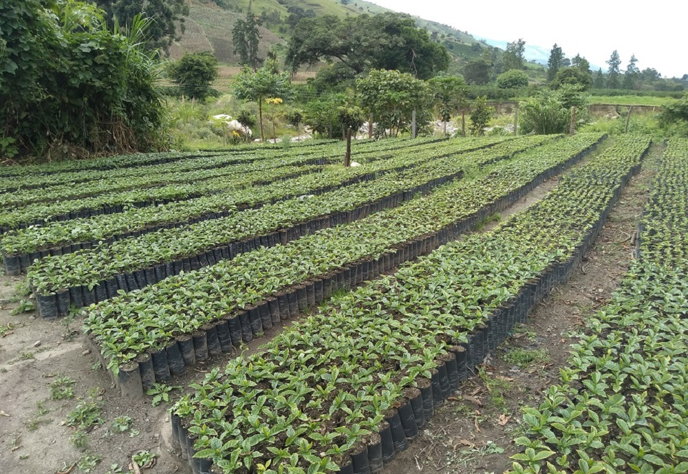
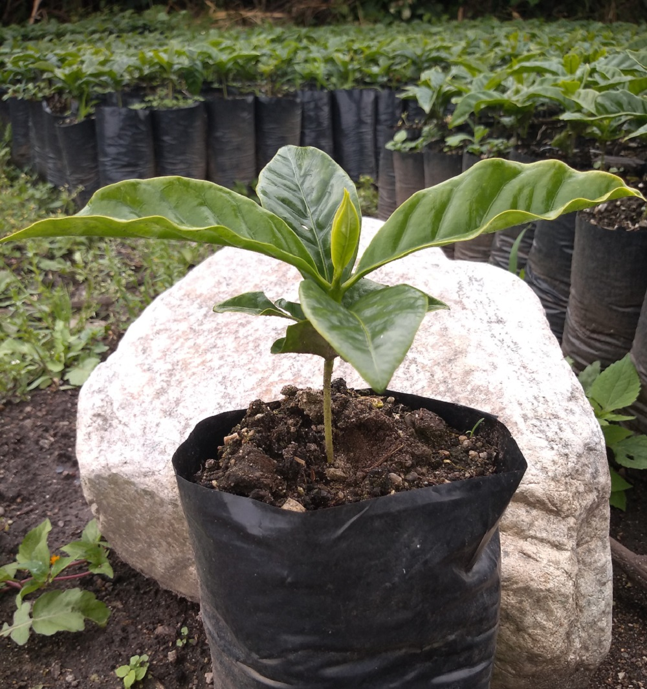
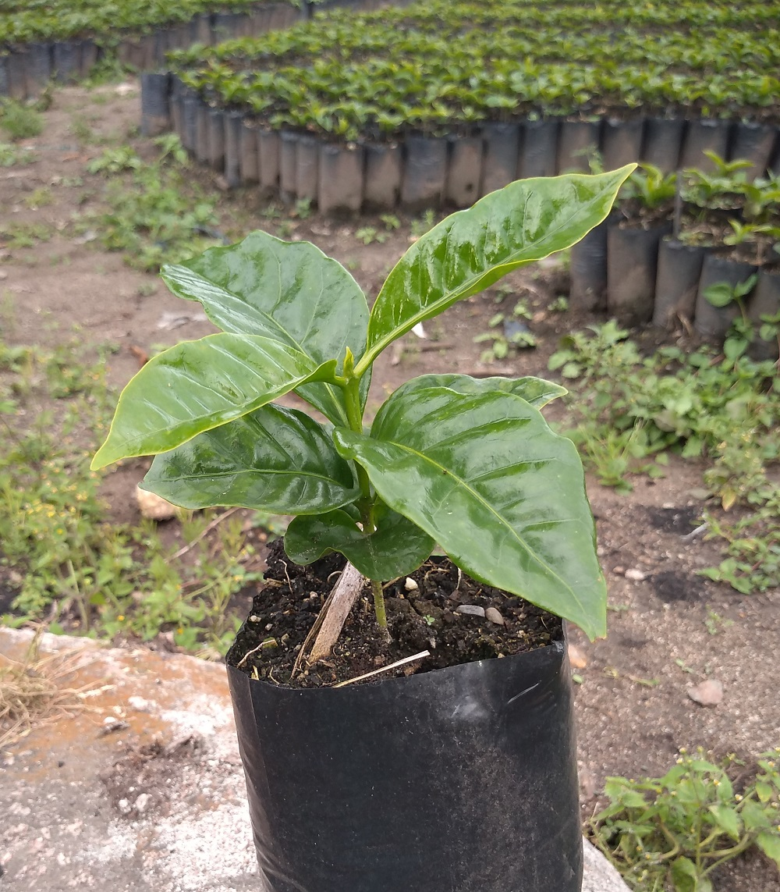
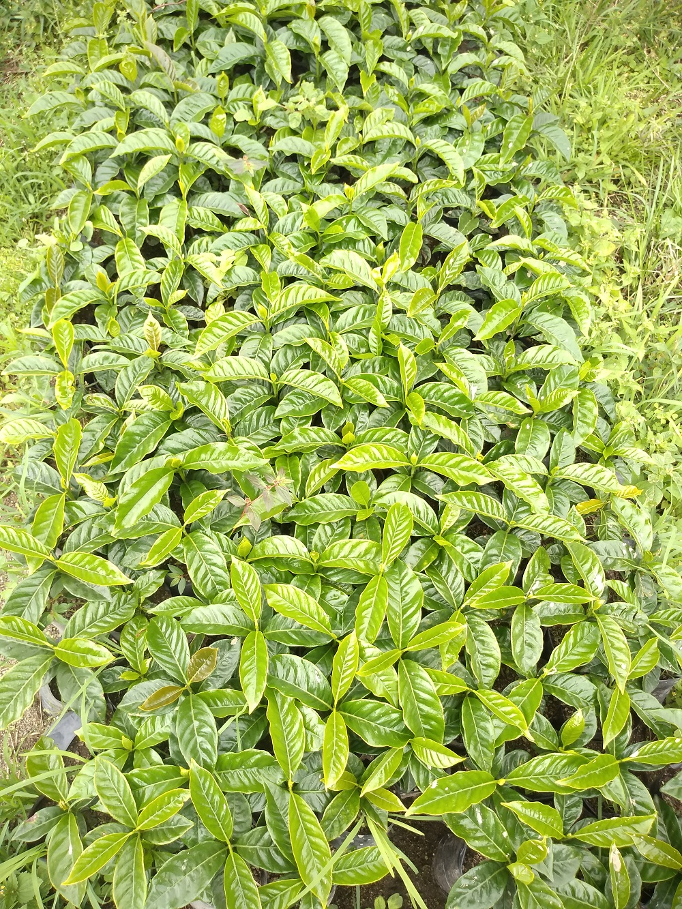
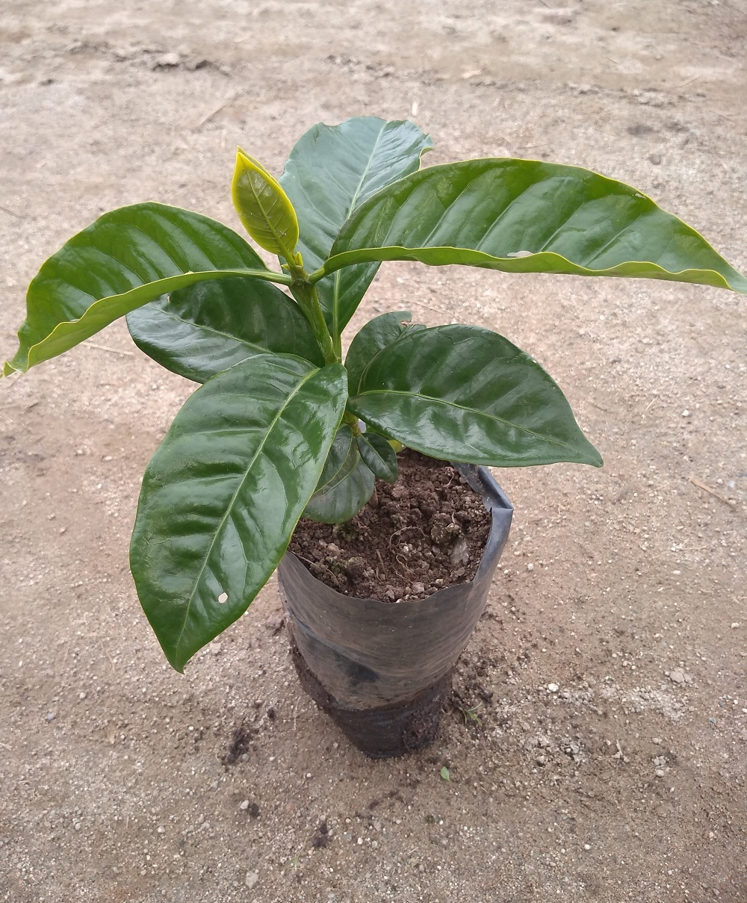
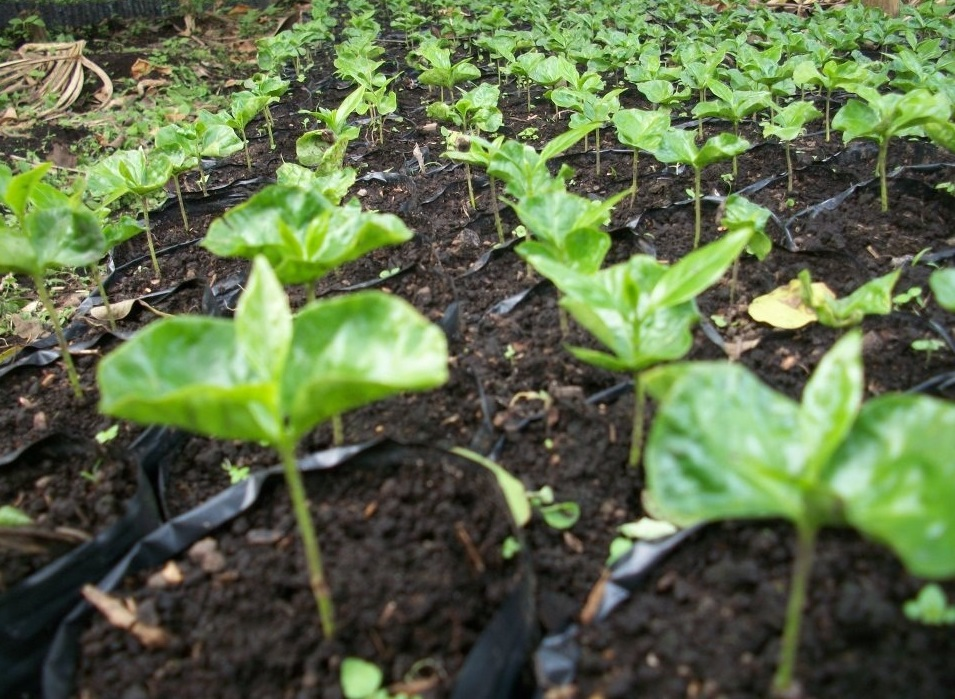

chapola en Detalle
Germinador de café
La primera etapa del crecimiento vegetativo del café ocurre en el germinador. Esta etapa es importante en la medida que se inicia el desarrollo de los órganos vegetativos, que incluyen la raíz, el tallo y las hojas, que serán el soporte de los órganos reproductivos, directamente relacionados con la producción. Un buen comienzo en el germinador mantendrá al máximo el potencial de crecimiento en las fases siguientes del cultivo, y es la base para el éxito de una inversión a largo plazo, cuando se renueva el cafetal por siembra nueva.
Al establecer el germinador se debe conocer el origen de la semilla y proporcionarle los cuidados necesarios para su óptimo desarrollo. El germinador permite obtener chapolas sanas y bien formadas, que garanticen el establecimiento de un buen almácigo.
Para tener un buen germinador debe tener en cuenta los siguientes pasos:
1. ¿Cuándo hacerlo?: 8 meses antes de la fecha en que piensa sembrar el cafetal
2. ¿Cómo hacerlo?: Lo puede construir con guadua o material de la zona, es mejor construirlo elevado del suelo, y debe conseguir arena y los demás elementos para establecer el sustrato para la siembra de la semilla
3. Tamaño: En un cajón que tenga 1 m de ancho por 1 m de largo cabe 1 kilogramo de semilla, que produce 3.000 chapolas
4. Control sanitario: Para evitar el volcamiento, mal del tallito o salcocho, antes de la siembra se debe aplicar un fungicida para prevenir el volcamiento.
5. Siembra de la semilla: La semilla se debe distribuir sobre la arena humedecida y presionarla suave con la mano hundiéndola en la arena. Luego se tapa con otra capa de arena tratada de 1 cm de espesor.
6. Riego: El germinador siempre debe estar húmedo.
7. Regulación del sombrío: Cuando salgan los primeros fósforos quite los costales y en los días siguientes vaya quitando las latas de guadua hasta que los fósforos se conviertan en chapolas.
8. Obtención de la chapola para el almácigo: Cuando las chapolas estén completamente abiertas se deben sembrar en las bolsas del almácigo. Las mejores chapolas son las que están bien formadas y tienen la raíz completa y vigorosa.Tiempo desde la siembra hasta la obtención de la chapola: 2 meses aproximadamente.